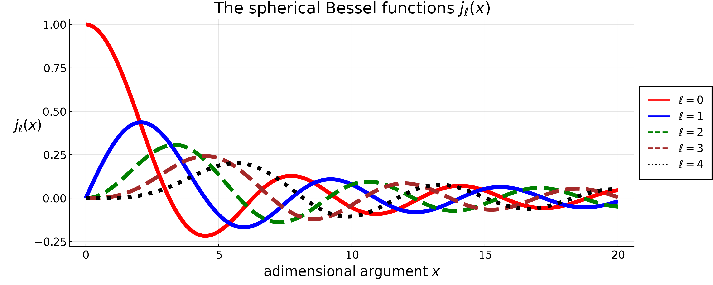

The Spherical Bessel Functions $j_\ell(x)$
Acronym used for the sources:
- DLMF = Digital Library of Mathematical Functions
- NIST = National Institute of Standards and Technology
Sources:
- U.S. NIST DLMF, Chapter 10 - Spherical Bessel Functions
- Spherical Bessel functions Taylor series: Section 10.53
Definition
Spherical Bessel functions are the solutions to the following differential equation:
\[ x^2 \secderiv{y}{x} + 2 x \deriv{y}{x} + (x^2 - l(l+1))y = 0 \, .\]
They are indexed by the order $\ell$. Two independent solutions are $j_\ell(x)$ and $y_\ell(x)$, the spherical Bessel functions of the first and second kind, respectively.
These functions are related to ordinary Bessel functions by
\[ j_\ell(x) = \sqrt{\frac{\pi}{2 x}} J_{\ell + 1/2}(x) \quad ,\quad \quad \quad y_\ell(x) = \sqrt{\frac{\pi}{2 x}} Y_{\ell + 1/2}(x) = (-1)^{\ell+1} \sqrt{\frac{\pi}{2 x}} J_{-\ell - 1/2}(x) \, .\]
For integer $\ell$, the spherical Bessel functions of the first and second kind are related to each other by
\[ y_\ell(x) = (-1)^{\ell+1}j_{-\ell-1}(x) \quad , \quad \quad \quad j_\ell(x) = (-1)^{-\ell}y_{-\ell-1}(x) \, .\]
In this appendix, we focus only on the spherical Bessel functions of the first kind with integer order $\ell \geq 0$.
The first few $j_\ell(x)$ are the following:
\[\begin{align*} &j_0(x) = \frac{\sin(x)}{x} \, ,\\[6pt] &j_1(x) = \frac{\sin(x)}{x^2} - \frac{\cos(x)}{x} \, , \\[6pt] &j_2(x) = \frac{3\sin(x)}{x^3} - \frac{\sin(x)}{x}- \frac{3\cos(x)}{x^2} \, . \end{align*}\]

Properties
\[\begin{longtable}{r c} %%%%%%%%%%%%%%%%%%%%%%%%%%%%%%%%%%%%%%%%%% Rayleigh's formula: & \parbox{10cm}{ \begin{equation} j_\ell(x) = (-x)^\ell \left(\frac{1}{x} \deriv{}{x}\right)^\ell \frac{\sin(x)}{x} \end{equation} } \\[14pt] %%%%%%%%%%%%%%%%%%%%%%%%%%%%%%%%%%%%%%%%%% Value in zero: & \parbox{10cm}{ \begin{equation} j_\ell(0) = \begin{cases} 1 \; \quad \ell =0 \\ 0 \; \quad \forall \ell >0 \end{cases} \end{equation} } \\[14pt] %%%%%%%%%%%%%%%%%%%%%%%%%%%%%%%%%%%%%%%%%% Series expansion near 0: & \parbox{10cm}{ \begin{equation} j_\ell(x) = x^\ell \left( \frac{\sqrt{\pi}}{2^{\ell+1}\, \Gamma(\ell + 3/2)} + O(x^2) \right) \end{equation} } \\[14pt] %%%%%%%%%%%%%%%%%%%%%%%%%%%%%%%%%%%%%%%%%% Parity: & \parbox{10cm}{ \begin{equation} j_\ell(-x) = (-1)^\ell j_\ell(x) \end{equation} } \\[14pt] %%%%%%%%%%%%%%%%%%%%%%%%%%%%%%%%%%%%%%%%%% \multirow{2}{*}{Recursive relations:} & \parbox{10cm}{ \begin{equation}\label{eq:SBF_recursive_1} j_{\ell+1}(x) = \frac{\ell}{x}j_\ell(x)- \deriv{j_\ell(x)}{x} \end{equation} } \\[14pt] & \parbox{10cm}{ \begin{equation}\label{eq:SBF_recursive_2} j_{\ell+1}(x) = \frac{2\ell+1}{x}j_\ell(x)- j_{\ell-1}(x) \end{equation} } \\[14pt] %%%%%%%%%%%%%%%%%%%%%%%%%%%%%%%%%%%%%%%%%% Orthogonality: & \parbox{10cm}{ \begin{equation} \int_{-\infty}^{+\infty}\dd x \, j_m(x) \, j_n(x) = \frac{\pi}{2m+1}\delta_{mn} \end{equation} } \\[14pt] %%%%%%%%%%%%%%%%%%%%%%%%%%%%%%%%%%%%%%%%%% Closure relation: & \parbox{10cm}{ \begin{equation}\label{eq:SBF_closure_relation} \frac{2}{\pi}\int_{0}^{\infty}\dd x \, x^2\, j_\ell(k_1 x) \, j_\ell(k_2 x) = \frac{\delta_{\rm D}(k_1-k_2)}{k_1^2} \end{equation} } \\[14pt] %%%%%%%%%%%%%%%%%%%%%%%%%%%%%%%%%%%%%%%%%% \makecell[l]{ Rayleigh's expansion \\ of plane waves (first):}& \parbox{10cm}{ \begin{equation}\label{eq:SB_raileght_exp_2} e^{i\mathbf{k}\cdot\mathbf{x}} = 4 \pi \sum_{\ell=0}^{\infty} \sum_{m=-\ell}^{\ell} \, i^\ell \, j_\ell(k x) Y_{\ell m}(\versor{k}) \, Y_{\ell m}^{*}(\versor{x}) \end{equation} } \\[14pt] %%%%%%%%%%%%%%%%%%%%%%%%%%%%%%%%%%%%%%%%%% \makecell[l]{ Rayleigh's expansion \\ of plane waves (second):}& \parbox{10cm}{ \begin{equation} e^{i\mathbf{k}\cdot\mathbf{x}} = \sum_{\ell=0}^{\infty} (2\ell+1) \, i^\ell \, j_\ell(k x) \mathcal{L}_{\ell}(\versor{k}\cdot\versor{x}) \end{equation} } \\[14pt] %%%%%%%%%%%%%%%%%%%%%%%%%%%%%%%%%%%%%%%%%% \multirow{4}{*}{Known infinite integrals:} & \parbox{10cm}{ \begin{equation} \int_{0}^{\infty}\dd x \, j_\ell(x) = \frac{\sqrt{\pi}\, \Gamma(\frac{\ell+1}{2})}{2\,\Gamma(1+\frac{\ell}{2})} \end{equation} } \\[14pt] & \parbox{10cm}{ \begin{equation} \int_{0}^{\infty}\dd x \, j^2_\ell(x) = \frac{\pi}{2(2\ell+1)} \end{equation} } \\[14pt] & \parbox{10cm}{ \begin{equation} \int_{0}^{\infty}\dd x \, x^p \, j^2_\ell(x) = \frac{ \pi \, \Gamma(1-p) \, \Gamma(\ell+\frac{p+1}{2}) }{ 2^{2-p} \, \Gamma^2(1-\frac{p}{2}) \, \Gamma(\ell+\frac{3-p}{2}) } \end{equation} } \\[14pt] & \parbox{10cm}{ \begin{equation} \int_{0}^{\infty}\dd x \, j_\ell(K x) \, j_\ell(k x)= \frac{\pi}{2(2\ell+1)}\frac{K^\ell}{k^{\ell+1}} \;, \quad \forall K > k \end{equation} } \\[14pt] %%%%%%%%%%%%%%%%%%%%%%%%%%%%%%%%%%%%%%%%%% \end{longtable}\]
From linear regression on $0 \leq \ell \leq 100$, the first zero of $j_\ell(x)$ occurs roughly around $x \simeq 4.75 + 1.05 \, \ell$
Note that this is an overestimate for very low $\ell$: $j_0(x)$ has its first zero at $x = \pi$.